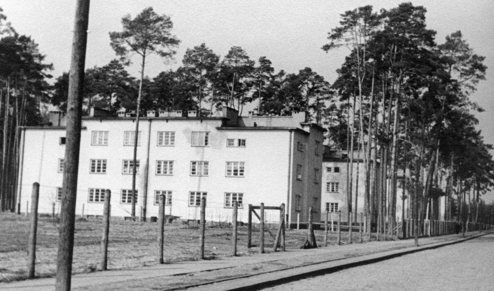

Miasto powstało jako rezultat decyzji o zlokalizowaniu w pobliżu wsi Pławo między
miasteczkami Nisko i Rozwadów w ramach budowy COP tzw. Zakładów Południowych. Pierwsze historyczne
wzmianki
na temat wsi Pławo, na terenie której powstało miasto, pochodzą z 1. połowy XV wieku. W pobliskim
Przyszowie znajdował się dwór łowiecki króla Władysława Jagiełły, zbudowany przed 1358 rokiem przez
Kazimierza Wielkiego.
W końcu XV wieku Pławo było wsią królewską. Osiadła ludność trudniła się łowiectwem, wyrębem drzew,
bartnictwem, uprawą roli, a także flisactwem, czyli spławianiem drewna.
Stalówka.vvv
Home
